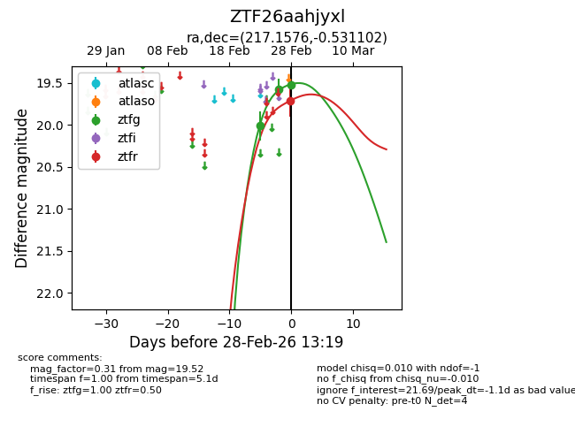
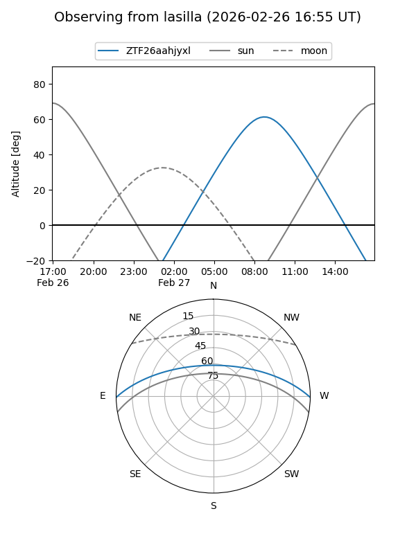
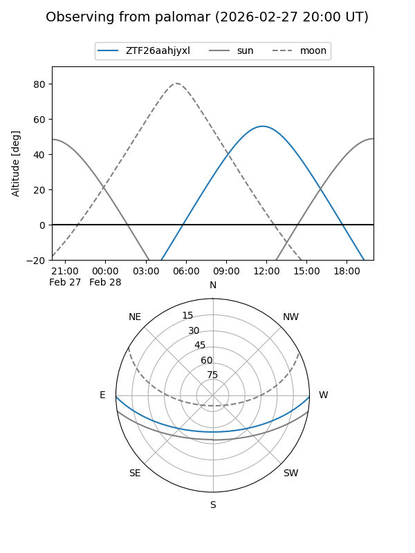
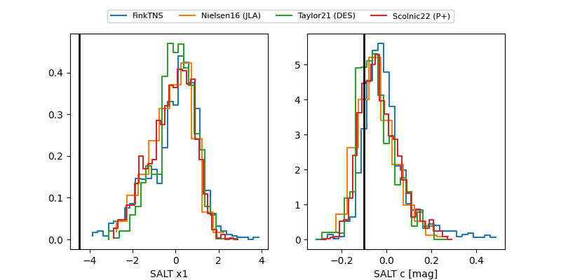

ZTF26aahjyxl
Target ZTF26aahjyxl at 2026-02-28 13:21
Aliases and brokers:
FINK: link
Lasair: link
ALeRCE: link
alt names
ZTF26aahjyxl (ztf,fink_ztf)
Coordinates:
equatorial (ra, dec) = 217.1576,-0.53110
equatorial (HMS+DMS) = 14:28:37.82,-00:31:51.97
galactic (l, b) = (347.0844,+53.79304)
Flags:
Photometry:
last ztfg=19.52, ztfr=19.71
3 ztfg, 1 ztfr detections
Lightcurve

Visibility


Additional plots
